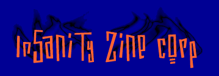

insanity zine c0rp. own3d thuz sh1t!
mais um IIS ownado
isso ja esta ficando sem graça....
2 boas razoes pra voce trocar seu IIS por um Apache:
primeiro, o Apache eh gratis, segundo,
de uma pequena olhada nas estatisticas de servidores hackeados
na attrition
no periodo de 1/8/99 e 1/8/00,
por exemplo em 06/00, o IIS chegou a quase 75% das invasoes!
e desde 01/00 nao abaixa de 50% das invasoes
ja o apache o maximo q conseguiu foi + ou - 47%...
god save the SCRIPT KIDDIES @*#$%&!
GreetZ:
zer0left (gatão!), NeTRaP, b00tx, the-magic, safemode.org,
attrition.org, alldas.de, prime suspectz, Jew Crew, Poltergeists!
FuckZ:
*.GOV.BR, políticos FDP, rede globo!
W3'll c0nt1nue until tir1ng!@^%$#@
m0re w1ll c0me......@#$!
dexter07 / fr0lic / n4rfy